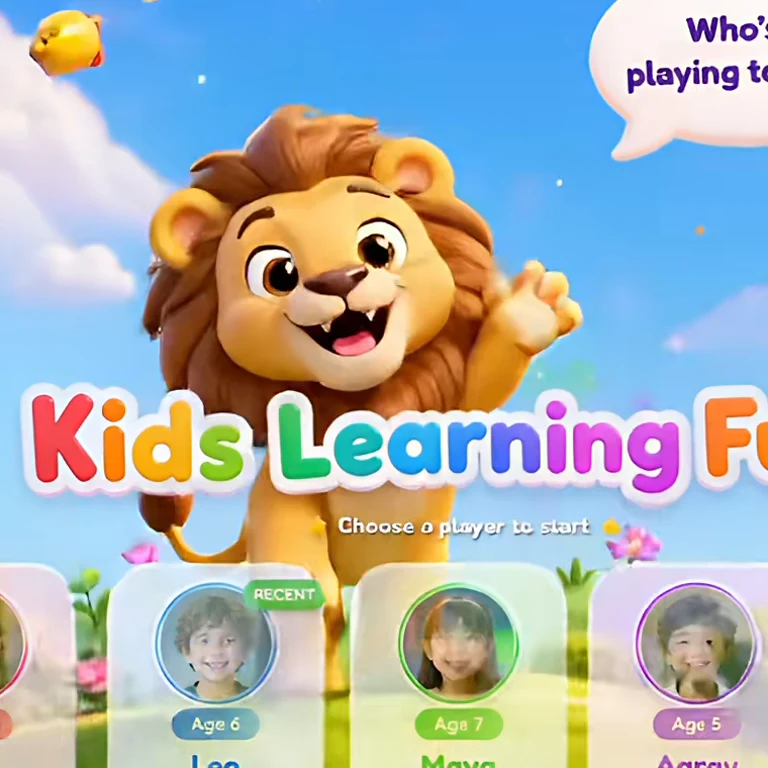
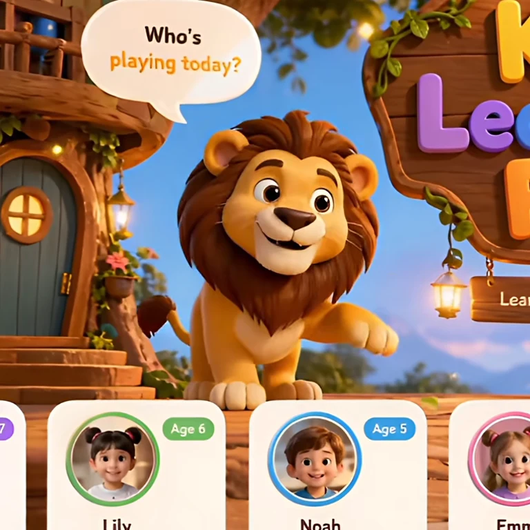
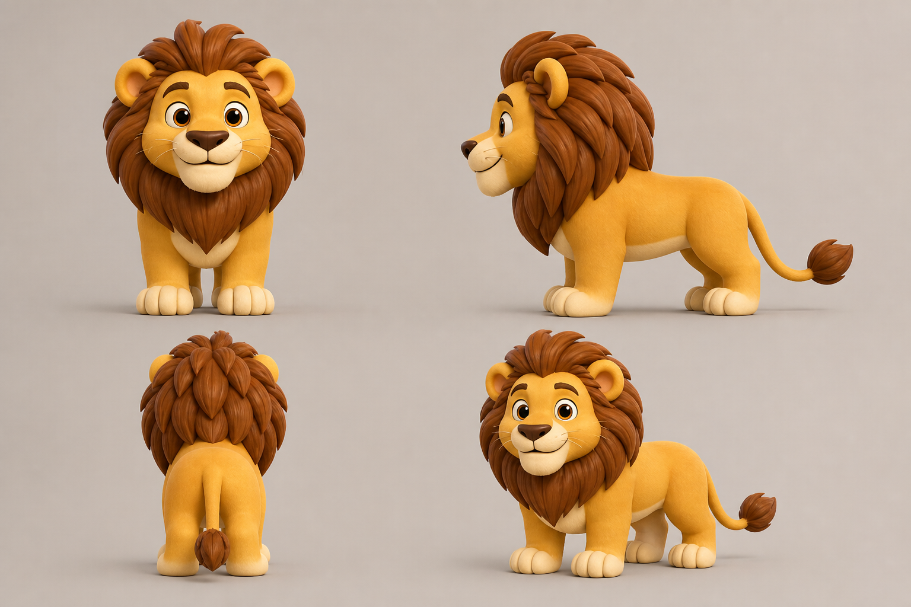
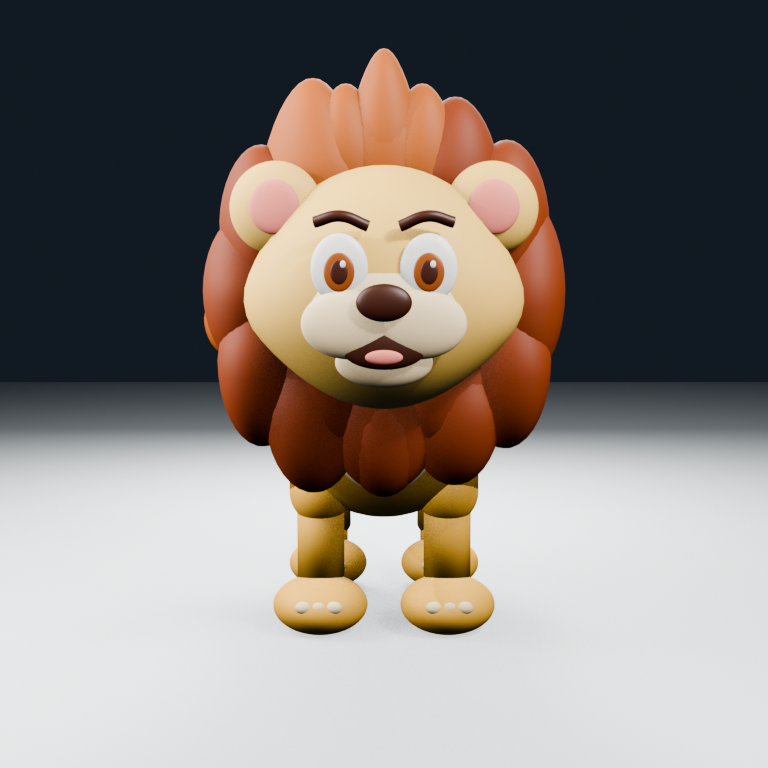
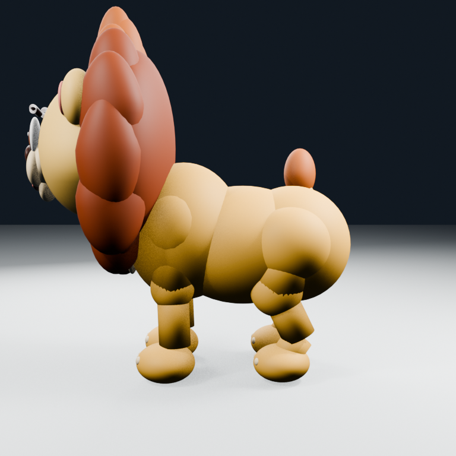
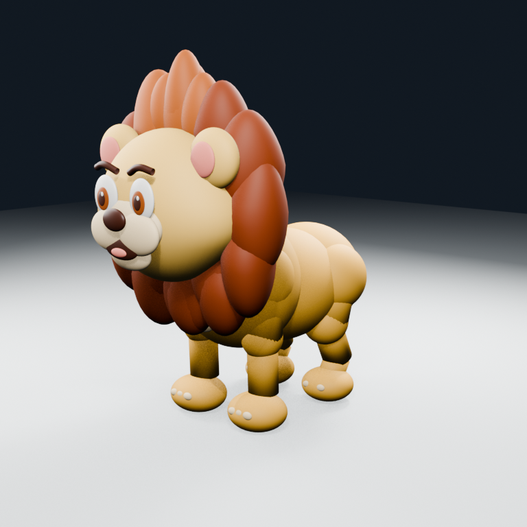

Lion Offline Approval
Identity references and Blender proportion checkpoint. Nothing on this page is connected to the application.
OFFLINE REVIEW
1. Authoritative Character Evidence
These video close-ups are the highest authority for the lion's face, personality, apparent proportions, colors, and motion language.


2. Four-View Identity Guide
This guide was derived from both close-ups to establish consistent hidden anatomy. Approving it means the next sculpt should follow this lion identity; it does not approve a final model.

3. Current Blender Proportion Study
This blockout is deliberately marked NOT APPROVED. It demonstrates scale and four-paw ground contact, but it is not the intended final modeling quality.



Approval Decision
- Approve or correct the turnaround identity: face, mane, body length, leg height, paws, and tail.
- Do not approve the current Blender blockout as final art.
- After identity approval, the next deliverable is a continuous neutral clay sculpt turntable.
- Rigging, animation, GLB export, and application integration remain paused.